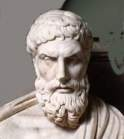
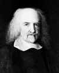
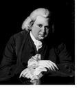
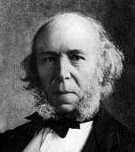
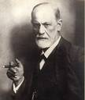

| Ethics Dictionary | Conditions Formulas | PTS Glossary | FAQs |
|
|
| Ethics Dictionary | Conditions Formulas | PTS Glossary | FAQs | |
Ethics Dictionary
The Ethics Dictionary
contains an informative Glossary, and a
few historical references to illustrate the
development of the subject. As any dictionary it is mainly edited to be used as
reference but should be read through as well. Use the links in the table below to find
needed information quickly.
Part of the Ethics tech is the PTS tech of ST-4Pro. It has a glossary
of its own.
Glossary
ACCESSORY: A person who knowingly helps an offender in the commission of a crime without being directly involved in the physical action of the crime.
ADOPT: To take up and use as one's own. Example: The Danger Formula has a point 6, "Formulate and adopt firm policy that will hereafter detect and prevent the same situation from continuing to occur".
ALLEGATION: Something stated or declared positively usually in an accusative fashion. A defendant usually has to face charges and allegations in court which still have to be proven before conviction. "Innocent until proven guilty" is the status in court at this point.
ALTER-IS: The practice of changing or falsifying the way something actually is.
AMENDS PROJECT: A project undertaken to make up for injury, loss, etc., that one has caused. The Liability Formula has a step, "make up the damage one has done". This is usually done by doing an amends project. The scale and type of project has to fit the type of damage one has done and has to be of value to the people who suffered from that damage.
AMNESTY: A general pardon for past offenses, usually granted on a larger scale to settle conflicts with an opposition group or class of offenders. It's a formal statement of 'forgive and forget', if the offenders 'lay down their arms' or fulfill certain conditions.
ANTAGONISTIC TERMINAL: (AT) 1. A person or group opposed to the pc or what the pc is doing. This can be due to a number of factors. Misunderstandings, cross-purposes, hate, opposite convictions, but can also include situations where the pc is actually provoking the person in some way to antagonize him. Such a terminal could be called a Suppressive Person but this term is very loaded and often inaccurate and problematic.
AUDITORS CODE: Code for professional conduct of an auditor in session. It forbids, among other things, evaluations and invalidations of the pc. The Ethics Officer is not bound by the Auditors Code. Being audited under the Auditors Code is actually a privilege that has to be earned by the person. Yet, the Ethics Officer has to act in a professional and factual manner and keep his objective in mind. Unless he has the cooperation of the person Ethics won't go very far - it won't go in.
BIAS: Prejudice. A mental leaning or inclination.
BILL OF RIGHTS: A formal statement of the fundamental rights of the peoples of the United States. It is part of the US Constitution, Amendments 1-10. They are briefly: 1. Freedom of religion, speech and press and peaceful assembly. Right to petition. 2. Right to bear arms. 3. Protection against military use of ones property or home in peace time. 4. Protection against searches or seizures without a warrant. 5. List of various legal rights. 6, 7. Right to a speedy trial by a jury. 8. Forbids cruel and unusual punishment. 9, 10. Speaks to the distribution of power between federal government, states and individuals.
BLAME, 1. Human emotion below 0.0 on the tone scale (-1.0 punishing other bodies). A feeling of "It must be somebody else's fault." It is assigning the cause of something wrongly to defend self or somebody else other than the accused. This assignment may be called blame, the arbitrary election of cause. 2. Blame is denying one's responsibility. One can blame self, that’s the last stage, or one can blame somebody else. That’s an effort not to be responsible. Shame , Blame and Regret are seen as negative values, as opposed to Responsibility and truth that are positive values in Ethics.
BOOT CAMP: Military training camp for new recruits. It is run with tough discipline. It is known to teach recruits to do "the impossible" and the unthinkable actions required in a soldier by using tough discipline, harsh punishments, threats and duress.
BULLY: A daily life term for a person seeking to dominate and harass others, whether for personal gain or for sick satisfaction. Could be said to be an imprecise term for a Suppressive Person. Bullying is usually an overt activity while SPs are known for using covert methods as well.
BYPASS: Set aside, ignore. Go past as it didn't exist.
CHAPLAIN: A person in a larger organization who takes care of the welfare of staff and public. The chaplain also seeks to mediate civil disputes between people in his care. This includes marriage counseling. He will seek to sort out a couple's difficulties including make the parties clearly state what is needed and wanted from the other spouse to make the marriage work. The Chaplain is not an Ethics Officer but their type of work can overlap.
CHAPLAIN'S COURT: A hearing to resolve matters of dispute between two individuals. A Chaplain's Court handles civil matters and disputes, not ethics matters.
COMMITTEE OF EVIDENCE: " A fact-finding group appointed and empowered to impartially investigate and recommend upon Scientology™ matters of a fairly severe ethical nature". The system seems flawed as it usually works as an extended arm of management. We have yet to see anyone being found innocent in a ComEv once it is convened.
CONDITIONS BY DYNAMICS: An ethics type action. Have the person study the Conditions Formulas. Clear up the words related to his Dynamics 1-8, and what they are. Now ask him what is his Condition on the first Dynamic. Have him study the Formulas. Don’t buy any glib explanations. When he’s completely sure of what his Condition really is on the first Dynamic he will cognite. Similarly go on up each one of the Dynamics until you have a Condition for each one. Continue to work this way. Somewhere along the line he will start to change markedly.
CONDONE: Forgive, overlook, disregard or pardon.
CONFUSION: 1. Any set of factors or circumstances which do not seem to have any immediate solution. More broadly, a confusion in this universe is random motion. 2. Plus randomity, meaning motion unexpected above the tolerance level of the person viewing it. 3. A number of force vectors traveling in a number of different directions. 4. A confusion consists of change of particles in space and time in an unpredictable or unpredicted manner.
CONSTITUTION:
1) The most senior law of a country which sets out the form of the government. It
specifies the purpose of the government, the power of each department of the
government, the state-society relationship, the relationship between various
governmental institutions, and the limits of the government. The
constitution is the fundamental part of the social contract between the state
and the civil society.
2) We can also view the constitution
as a job description. In a liberal democratic state, the people as a whole hire
some officials to administer the government for public good, and the
constitution is the employment contract and job description. To be sure, many
other laws are also job descriptions for the government, but the constitution is
the highest. The constitution is a guide for legislation and for the
interpretation of legislation. See
also Bill
of Rights.
CONSTITUTIONAL LAW: That branch of law that covers the theory behind and the laws of a constitution.
COURT OF ETHICS: In Scn, a form of ethics hearing based on known data. A disciplinary court action held to punish misdemeanors or crimes. It's held when all the data are already fully known. Thus it is much like a sentencing phase of a court case.
CRIME: Unlawful acts defined in criminal law. Theft, forgery, embezzlement, serious bodily harm and murder are examples of crimes.
CRIMINAL: 1. Person breaking the law by committing crimes 2. One who is unable to think of the other fellow, unable to determine his own actions, unable to follow orders, unable to make things grow, unable to determine the difference between good and evil, unable to think at all on the future. Anybody has some of these; the criminal has ALL of them. 3. One who thinks help cannot exist on any Dynamic or uses "help" covertly to injure and destroy. 4. Criminals are people who are frantically attempting to create an effect long after they know they cannot. They cannot, then, create decent effects, only violent effects. Neither can they do honest work.
DAMAGES: Money to make up for some harm done to a person or his property.
DECLARE: Announce officially; proclaim.
DISAVOW: Deny knowledge of or connection with; disown.
DEV-T: Developed unnecessary Traffic. A person who causes a lot of fuss but don't really deliver a product is creating Dev-T. If he almost delivers the product but not quite it is Dev-T as well; seniors, co-workers or customers will find their time consumed and little actually accomplished.
DOWNSTAT: A person or group with low or declining statistics showing a low or falling production or profitability. Indicators of out-ethics. An investigation should reveal the real reason.
DYNAMIC: The urge, thrust and purpose of life-SURVIVE! - in its eight manifestations.
The First Dynamic is the urge toward survival of self.
The Second Dynamic is the urge toward survival through sex, or children. This Dynamic actually has two divisions. The Second Dynamic (a) is the sexual act itself and Second Dynamic (b) is the family unit, including the rearing of children.
The Third Dynamic is the urge toward survival through a group of individuals or as a group. Any group or part of an entire class could be considered to be a part of the Third Dynamic. The school, the club, the team, the town, the nation, are examples of groups.
The Fourth Dynamic is the urge toward survival through all mankind and as all mankind.
The Fifth Dynamic is the urge toward survival through life forms such as animals, birds, insects, fish and vegetation, and is the urge to survive as these.
The Sixth Dynamic is the urge toward survival as the physical universe and has as its components Matter, Energy, Space and Time, from which we derive the word MEST.
The Seventh Dynamic is the urge toward survival through spirits or as a spirit. Anything spiritual, with or without identity, would come under the Seventh Dynamic. A subheading of this Dynamic is ideas and concepts such as beauty, and the desire to survive through these.
The Eighth Dynamic is the urge toward survival through a Supreme Being, or more exactly, Infinity.
END-RUDIMENTS: ST-2 tech. Rudiment questions used at the end of a confessional session. End-ruds are also used after a O/W write-up to ensure no missed withholds are left behind. End-ruds consist of a Varity of missed withholds questions. "Has a W/H been missed?" "Anything you didn't say?", "Did you tell all?", etc. They are done in session, using a Meter.
ETHICAL CONDUCT: Conduct out of one’s own sense of justice and honesty. When you enforce a moral code upon people you depart considerably from anything like Ethics. People obey a moral code because they are afraid. People are ethical only when they are strong.
ETHICAL CODE: an ethical code is not enforceable, but is a luxury of conduct. A person conducts himself according to an ethical code because he wants to or because he feels he is proud enough or decent enough, or civilized enough to do so. An ethical code outlines certain standards for self-restriction and participation. The Code of Honor is such a Code.
ETHICS: 1) Ethics
is reason and the contemplation of optimum survival. Ethics consist of rationality toward the highest level of survival
for the individual, the future race, the group, and mankind, and the other Dynamics taken collectively. Ethics are reason. The highest ethic level would be
long-term survival concepts with minimal destruction, along any of the Dynamics.
2. Ethics is a personal thing. By definition, the word means “the study of the
general nature of morals and the specific moral choices to be made by the
individual in his relationship with others". When one is ethical or “has
his ethics in” it is by his own determination and is done by himself. It is
based on his belief in his own honor and values, and on good reason.
3. Ethics has to do with a code of agreement amongst people that they will
conduct themselves in a fashion which will lead to the optimum solution of their
problems.
4. The rules or standards governing the conduct of the members of a profession.
ETHICS ACTION: When we talk Ethics Action versus auditing we use the auditing technology as much as we can and keep intervention with Ethics Actions to a minimum. It is however a technical fact that auditing will only be effective if Ethics is in. Ethics Action is undertaken to handle out-ethics situations that makes auditing ineffective or impossible. It is that additional tool needed to get technology in.
ETHICS CASES: PTSes and SPs, including people with outright criminal behavior or heavy overts and withholds they don't want to give up. Pc's that routinely get involved in out-ethics situations are considered Ethics Cases. The out-ethics has to be confronted and handled by direct intervention.
ETHICS
CONDITION: 1) The different
circumstances that characterize a certain type of situation is called a
Condition. Each Condition has a series of steps that, when followed
intelligently, will resolve the situation.
2) A Condition is formally defined as an operating state. It's the circumstances a
person or group is in in relationship to others or anything on the Dynamics.
There is a formula connected with each Condition which gives a general outline
on how to handle the situation and improve ones lot. These Conditions can
be applied on a personal level, but the original concept was to apply them to
groups and commercial companies. The table of Conditions forms a scale of
situations, the one leading to the next and improved operating state when the
Condition Formulas are applied correctly.
ETHICS OFFICER: In Scn, an appointed staff member whose duty
it is to enforce Ethics Policies. He has a middle management position but works
closely together with top management by watching and reporting on production statistics.
In ST: A counselor helping people to get their Ethics in and turn their lives
around using Ethics technology.
A fully trained Ethics Officer needs to master the data presented here, including
the PTS
tech and be a Confessional auditor (ST-2) as well. The chapters 'Confessional
Auditors Beingness' and Ethics Officer's
Beingness give the relevant data about how the Ethics Officer goes about
doing his business.
ETHICS-SITUATION:
1. A major outness in a person's life of
ethical or moral nature. A non-optimum situation where the person typically is in moral trouble with
others, important to his life and well being.
2. An Ethics Situation is an ongoing
situation that exists in real life. It is not just one random incident. It's a
non-optimum situation that the pc is creating or at least is part of in an
active and real way. The pc is in some area of his life going in the direction
of self-destruction or destruction of others. This is in direct opposition of
the course the auditor is seeking to take him. Thus it is a real and present
time problem preventing gains in auditing. See also Out-ethics.
EVIL: Something that is bad and non-survival and immoral. In religious terms it may be defined as going against God's will and plan. In terms of Ethics we define it as going against the greatest good for the greatest number of Dynamics in a flagrant and willful way. The one does not exclude the other as God's basic plan may very well be the survival of all creatures and the universe itself. We do not, however, have to depend upon the belief in God when we define Evil or Ethics.
FELONY: A class of major crimes defined by law.
GAME: A contest of person against person, or team against team. A Game consists of freedoms, barriers, and purposes. The rules of the Game are barriers. Actions within the rules are freedoms. What you seek to accomplish as a team is purpose. Each team member in a Game usually has a slightly different purpose (be it defense or offense as in ball games) which add up to the overall purpose. When you have accomplished the overall purpose as a team you have won the Game.
GAMES
CONDITION: 1) Compulsively fighting or opposing other individuals or groups.
There is nothing wrong with having games. There is a lot wrong with being in a
Games Condition because it is unknown, it is an aberrated activity, it is
reactive, and one is performing it way outside of one's power of choice and
without one's consent or will. 2. Have for self and can’t have for others is
at the bottom of any Games Condition. When a person is obsessively fighting
another person (or group) it is because he reactively sees that other party as
an opponent in an ill-defined game.
Common synonyms for Games Condition are 'in-fight', 'playing politics', 'scheming',
'heckling' and even 'criminal behavior'.
GREATEST GOOD: "Greatest good" as an ethical principle was first formulated by J. Bentham. "The greatest good for the greatest number of Dynamics" is obviously a refinement of that, taking into consideration all the factors of life, not just social life.
GOLDEN RULE:
"Do to others as you want them to do to you". Maybe the most widely
accepted ethical principle.
It is in the New Testament but is historically usually credited to Buddha.
GROUP: A number of individuals united by a common purpose and goal. A group member's value is usually determined by how closely he aligns his efforts along this purpose of the group and by how much he contributes to forwarding that goal.
HAT: Slang for the title and work of a post in a organization (derived from railroading, etc. usage where the Hat worn indicates one’s job).
HATTING:
Consists of showing somebody how to do something in a practical manner.
"Showing somebody the ropes". A full hatting would consist of reading
all the theory related to a post, reading predecessors' hat write-ups. These are
write-ups how they performed the functions. Finally the predecessor shows the
new person what to do including the actual tools and introduction to people and
locations involved.
2. Hatting also means to give a person just enough theory, drilling, practical
advice so he can start performing or producing.
INQUISITION:
1. The Medieval Inquisition was a court established in the 1200s by the Roman Catholic
Church. Its purpose was to discover and suppress heresy, meaning religious
beliefs that the Church held to be false, and to punish the sinners severely.
2. The Spanish Inquisition was established 1478 by the Spanish Crown.
It was known for its cruelty. No one was safe and it used very cruel
punishments, such as torture, burning and beheading. It was finally abolished
1834.
INTEGRITY: 1. The condition of having no part or element taken away or missing; undivided or unbroken state; wholeness. 2. A condition of soundness, impossible to corrupt, violate or squash. 3. Soundness or moral principle; the character of uncorrupted virtue, especially in relation to truth and fair dealing; uprightness, honesty, sincerity.
JUSTICE: 1. The action and procedure of law. 2. The action of the group against the individual when he has failed to get his own Ethics in. When a person breaks moral laws or the laws of society in a flagrant way he is "brought to justice". He is severely disciplined and punished by the group or the courts . From Latin 'Jus', law.
JUSTICE CODES: The Justice Codes of Scn are a set of laws that define different classes of offenses: errors, misdemeanors, crimes and high crimes. The Codes are enforced by justice actions, such as a Court of Ethics or a Committee of Evidence. The Codes seem troublesome as many of the listed crimes and high crimes are a person's natural rights under the Creed of Church of Scn. Thus we find Scn Justice an invalid subject in its present form.
JUSTIFICATIONS: Explaining away the most flagrant wrongnesses. Most explanations of conduct, no matter how far fetched, seem perfectly right to the person making them since he or she is only asserting self-rightness and other-wrongness. Bad excuses.
JUSTIFIED: For good reason, deserved. How a person explains why the other party deserved what he got, usually in terms of punishment or pay-back. The way something is justified can be from completely truthful to completely false.
JUSTIFIER: An imagined or invented good reason for committing an overt or for punishing somebody. A reason or excuse used for an action committed.
LAWS: The codified agreements of the peoples. Laws express in a formal way a group's customs and standards for acceptable conduct believed to be necessary within the group. Breaking the Law is punished by the courts.
LIE: An alteration of time, place, event and form. A "invention" with the purpose of hiding the truth. An Alter-is of the facts. The lowest form of creativity. See also Truth
LOCATIONAL: Simple auditing process: "Locate the _______ .“ The auditor has the preclear locate the floor, the ceiling, the walls, the furniture in the room and other objects and bodies. It is run until the pc feels he is in present time and cheerful about it.
MEST WORK: This means manual of physical work. (MEST being the parts of the physical universe: Matter, Energy, Space and Time). If a person goofs and do things completely wrong in an area he is most likely in a Condition of Confusion. Simply doing manual work, including work-outs, helps him cool off and get re-orientated as a being. In other words Mest Work has a therapeutic value and is often used until an actual Ethics Program can be drawn up or as a step in an Ethics program.
MISSED WITHHOLD: An undisclosed contra-survival act which has been restimulated by another but not disclosed. The pc feels the other should have found out about something and didn’t. It leaves the person in suspense and in wondering and can result in violent and temperamental explosions and blows. The cure is to get the withholds fully known and out in the open and acknowledged.
MISSED WITHHOLD OF NOTHING, 1. There is nothing there, yet the auditor or Ethics Officer tries to get it and the person becomes upset. This gives the person a missed withhold of nothing. His nothingness was not accepted. The person has no answer. It can result in similar reactions as missed withholds where something actually is there. What was missed in case of a Missed W/H of Nothing was, that nothing was there.
MORAL CODE: That series of agreements to which a person has subscribed to guarantee the survival of a group. Formal rules a group member has to follow to be acceptable, whether he understands them and agrees to them or not.
MORALS:
1) Morals
could be defined as a code for good conduct based on the experience of the
culture or race. It is an agreed upon standard of good conduct of individuals
and groups.
2) Morals are summed up in religious commandments,
laws, rules and regulations that in no uncertain terms define right and wrong
conduct. These laws have been developed by the group or peoples over time as the
collective experience of what is broadly destructive (wrong) and broadly
pro-survival (right).
MORALE: Is a feeling of common purpose of a group or team and a feeling of that one as a team is succeeding in accomplishing that purpose.
MORES: Are those agreements which make a society possible. They are the heavily agreed-upon, policed codes of conduct of a society. They are "the unwritten laws" and customs of a group.
MOTIVATORS:
1) Considerations and dramatizations that one has
been wronged by the actions of another or a group. They are characterized by
constant complaint with no real action taken to resolve the situation.
2) Being at the receiving end of overts and in turn seeing this as a good reason to pay
back the damage.
NATTERING: Finding fault with; criticizing in an invalidative way with little or no regard for the facts. Natter is an indicator of overts. Its an attempt to reduce in size the person the nattering person is talking about. It is a made up word from 'Negative chatter'.
NATURE OF
MAN: In Ethics we see Man's nature as being basically good. He seeks ultimately
survival for himself and all creatures on up the
Dynamics. In his aberrated state he can fall way short of that, of course. A man
seeking mainly to do evil is seen to be out of valence so the word
"basically" is important in the definition. An evil man has to be
brought to his senses and turn his life around by becoming his own good
self.
In Christianity Man is usually presented as being basically bad, a lost sinner.
He is lost without
the guidance of God and Jesus. Christianity is describing a man who has lost his own
soul and lost touch with the Dynamics beyond the first. By reorienting the
sinner towards the eighth Dynamic anew he will straighten out. This can well be
understood within the framework of the Ethics presented here. Contemporary
religious writings of the time of Jesus, such as the newly translated 'Gospel of
Thomas' (discovered 1945), give a more god-like picture of Man. Here Man has God within himself.
NO-CASE-GAIN,
1. The suppressive person is a specialist in making others ARC break with
generalized entheta that is mostly lies. He or she is also a No-Case-Gain
case. Such person is obsessed with smashing others by covert or overt means
that their case is messed up and won’t improve in routine
processing.
2. Such a person has withholds; he or she can’t communicate freely nor as-is
the block on the track that keeps them in some distant past. Hence, a
No-Case-Gain. One of the characteristics of a Suppressive Person is
No-Case-Gains.
3. If you skip a person on one level several levels up, he or she will
experience only an unreality and will not react. This is expressed as
No-Case-Gain.
OUT-ETHICS:
1) An action or situation an individual is involved in which is contrary to the ideals and best interests of his group or family.
Non-survival behavior, usually of immoral or criminal nature. Actions or lack of actions causing troubles and losses for self and others.
It could be defined as not doing what one is supposed to do in order to
survive and succeed.
2) A person who acts against his own moral codes and the mores of the group
violates his integrity and is said to be out-ethics. See also Ethics-situation.
OUT RUDIMENT: Upsets, problems and withholds in a person's immediate life which consumes his attention. In auditing, each session is started with 'flying the rudiments'. These disturbances are addressed and cleared up so the person now can reach deeper into his case and increase his awareness through Grades auditing. "Out rudiments are easy to spot. The person with an ARC break (upset), won't talk or is misemotional or antagonistic. A problem produces fixated attention. Natter and covert hostile remarks means a withhold". See also Rudiments.
OUT OF
VALENCE: 1) Being somebody else than oneself. A person can be in the
Valence of anything, taking upon the characteristics of another person and even
an object and try to conduct his life from that view.
2) If you
look into suppressive person tech you will find an SP has to be out of valence
to be SP. He does not know that he is because he is himself in a non-self
valence. He is "somebody else" and is denying that he himself exists,
which is to say denying himself as a self.
OUTNESS: Condition of something being wrong or incorrect.
OVERT ACT: an
Overt Act
is not
just injuring someone or something; an Overt Act is an act of omission or
commission which does the least good for the least number of Dynamics or the
most harm to the greatest number of Dynamics.
2. An intentionally committed
harmful act committed in an effort to resolve a problem.
3. That thing that you did which you aren't willing to have happen to you.
OVERT-MOTIVATOR SEQUENCE: The chain of events where someone who has committed an overt has to claim the existence of motivators. The motivators are then likely to be used to justify committing further overt acts. We have a vendetta going that is likely to get out of hand and turn into a full blown war. Ethics is said to be the subject that seeks to prevent the O-M Sequence from taking place.
O/W WRITE-UP: The action of having a person write up exactly what he or she did to another person or group. It is done as an Ethics-action to get the person to come clean and again assume a causative viewpoint and attitude in the area. The person has to state what he did. Then write exact time, place form and event for the deed. Thoughts and explanations have no part in it. Only actions by the person himself should be included. After having written down all overts and withholds on an area the person should be given an end-rudiments check in session to ensure no missed withholds are left behind.
POTENTIAL TROUBLE SOURCE: Any person who, while being a student or preclear, remains connected to an Antagonistic or Suppressive Person or Group. A person „roller-coasters“, i.e., gets better, then worse, etc., only when connected to an Antagonistic or Suppressive Person or Group. In order to cease to roller-coaster the person must receive handling and processing intended to handle the condition.
PRECLEAR (PC): A person on his way to the state of Clear though receiving auditing.
PRESENT TIME PROBLEM: A specific problem that exists in the physical universe now, on which a person has his attention fixed. This can be practical matters he feels he ought to do something about right away. Any set of circumstances that occupies the pc's attention, so he feels he should do something about it instead of being audited.
"REASONABLE": 1. Being sensible and forgiving. 2. Being unable to recognize illogical data or outnesses for what they are and instead try to explain why they make sense or simply be unable to perceive the wrongness of the situation. Accepting any excuse offered regardless of how far fetched. This is also one meaning of 'rationalize' in the dictionary.
RESPONSIBILITY:
The willingness and ability to admit own causation. As one's level of
responsibility goes up one can control lager and larger spheres of life. It is a
willingness to be, to influence and cause, and to deal with objects and effects.
The concept of being able to care for.
Shame
, Blame and Regret
are seen as negative values, as opposed to Responsibility
and truth that are positive values in Ethics.
RECANT: Withdraw or renounce a statement or belief, especially in a formal and public manner.
REGRET, 1.
Human emotion below 0.0 on the tone scale (-1.3 responsibility as blame). A
feeling of “I'm sorry it happened. I wish it hadn't happened”. It is
the action of trying to make time run backwards, or an attempt to make it
undone. 2. "Regret is entirely the study of reversed postulates. One
intended to do something good and one did something bad or one intended to do
something bad and accidentally did something good. Either incident would be
regretted". Shame and Regret are different from
remorse. Remorse is bitter mental pain stemming from a realization of one has
been wrong. Remorse contains a moment of truth.
Shame
, Blame and Regret
are seen as negative values, as opposed to Responsibility
and truth that are positive values in Ethics.
REPAIR OF PAST ETHICS CONDITIONS: An ethics tool to repair misapplication of Ethics Formulas in the past or the lack of applying any Condition to an Ethics situation. It is usually done as a coached activity. The person is made to find the Condition that actually applied to a past and disturbing situation. He then applies that Condition in present time by writing down the steps he should have taken and doing the steps he still can do in present time.
ROLLER COASTER: A person „roller-coasters“, i.e., gets better, then worse, etc., only when connected to an Antagonistic Person (AT) or Suppressive Person or Group (SP). In order to cease to roller-coaster the person must receive handling and processing intended to handle the condition. The negative influence and invalidation of the AT or SP may cause the PTS to go into the valence of that person, if only temporarily. The remedy is to reduce or cut off that contact and teach the person how to handle any contacts or incidents better. This is in the realm of Ethics handling. That done, the person can receive auditing successfully. The auditing steps are then designed to handle the valence phenomena on a more permanent basis.
RUDIMENTS:
1. Setting the case up for the session action. When upsets, problems and
withholds in a person's immediate life consumes pc's attention they have to be
addressed. In auditing, each session is started with 'flying the rudiments'.
These disturbances are cleared up so the person now can be audited in the
direction of Clear.
2. The rudiments apply to present time and this universe now. They are a
nowness series of processes. 3. A rudiment is that which is used to get the pc
in shape to be audited in that session. 4. The reason you use and run rudiments is to get the pc in session so you can have the pc (1) in
communication with the auditor and (2) interested in own case. The purpose of
rudiments is to set up a case to run, not to run a case.
Ethics actions can be compared to handling rudiments. Only in Ethics the
situations need to be addressed in the physical universe and pc made to
understand he has to change his behavior. When this is accomplished to a good
result the pc can benefit from auditing.
SHAME
1. A human emotion below 0.0 on the tone scale (- 0.2 "being other
bodies"). A feeling of "shouldn’t have done it" or "it was
an unworthy act". 2. "There is an emotion of Shame connected with
being other bodies; one is ashamed to be oneself, he is somebody else".
Shame and Regret are different from remorse. Remorse is bitter mental pain
stemming from a realization of one has been wrong. Remorse contains a moment of
truth.
Shame , Blame
and Regret are
seen as negative values, as opposed to Responsibility
and truth that are positive values in Ethics.
SIN: The breaking of religious law or moral principle, especially through a willful act. Breaking God's moral laws.
STABLE DATUM: 1. The one thing selected and used to align other particles in a confusion becomes the Stable Datum for the rest. 2. Any body of knowledge is built from one datum. That is its Stable Datum. Invalidate it and the entire body of knowledge falls apart. A Stable Datum does not have to be the correct one. It is simply the one that keeps things from being in a confusion and on which others are aligned. 3. A datum which keeps things from being in a confusion and around which other data are aligned.
The so-called 'Doctrine of the Stable Datum' says, a confusion of motion can be understood by assuming one thing to be motionless. Until one selects one datum, one factor, one particle in a confusion of particles, the confusion continues. The one thing selected and used becomes the Stable Datum for the remainder. A Stable Datum does not have to be the correct one. It is simply the one that keeps things from being in a confusion and on which others are aligned.
STATISTIC: Numerical value of something which shows the state of affairs. By R. Hubbard it is usually used as a production Statistic which over time plots the person's production of a certain product. For example, students have a point system which gives a numerical value for their study production. A salesman will typically have his total sales as his main Statistic. In Scn each staff member has a certain post Statistic which monitors his productivity as a staff member in that job.
SUPPRESSIVE PERSON:
(SP:) 1. One who is battling constantly in
overt or covert
ways to make others less powerful and less able because of imagined danger to
himself. A Suppressive Person is basically seen as a person who has lost his own
good self and is out of valence.
2. In Church of Scn the label 'SP' is also used as a legal label. The person
is ex-communicated (kicked out) and it is forbidden to anyone in the Church to
contact him, including family members. The person is declared 'SP' based on
the Justice Codes' 'Suppressive Acts' or high
crimes rather than his character.
SURVIVAL:
1. Survival itself is
defined in terms of the physical universe: persisting as a physical identity
(body) through the passing of time despite obstacles and oppositions.
2. Survival, in our use, covers more than barely getting by. In human terms
'degree of success in life' may be a better description. This would apply along
all the Dynamics. The common denominator for all life impulses is however best
described as SURVIVAL. Survival is seen as a gradient scale with succumb at the
bottom and infinite survival at the top.
TABOO:
1. A ban or inhibition attached to something by social custom or emotional aversion.
2.
In terms of Ethics you could say taboos are moral rules with no rational
survival value. Certain words, expressions, pictures and actions have to be
suppressed or kept out of sight by written or unwritten law. Tracing back Taboos you will
find they usually have a traumatic or engramic origin, especially to the group as
a whole.
THIRD PARTY: A third person who by false reports creates trouble between two parties (individuals or groups). The Third Party can feed discrediting information to the two parties involved and get them into a fight with each other. This can cause serious troubles as the two parties can't figure out what is really going on. Having them sit down with a mediator usually sorts it out quickly if the mediator have them look at who is feeding them information about the other party. When they find that it is the same person they have found The Third Party and the conflict can now be resolved rationally.
TRUTH: The exact time, place, form and event. When "The Truth, the whole Truth and nothing but the Truth" is stated you will see the ill effects of past deeds diminish or disappear completely.
Shame , Blame and Regret are seen as negative values, as opposed to Responsibility and truth that are positive values in Ethics. See also O/W write-up.
UNREASONABLE: The opposite of Reasonable. Being unreasonable has the special, non-dictionary definition of only accepting real evidence and look through any attempt to explain away, cover up or embellish own virtues. This is an important trait in a good Ethics Officer. It is not unlike what you see judges do from the bench every day. A good Ethics Officer has to have a high ability to confront evil, not be deceived by lies or "public relations" talk, far fetched excuses, etc. He sees the evidence for what it is whether it reveals evil or repulsive acts or not. Having this attitude he stays in control of the situation and can do something about it. Even the wrong-doer will respect his authority and is more likely to listen and turn things around.
UPSTAT: 1) A person with a high or rising production statistic is said to be Upstat. The high production means he is doing well in his job and his Ethics is considered to be in.
Comment: Ethics and productivity are two different things. Using stats blindly can lead to absurdities where wealth or profits are made to equal Ethics, whether obtained as the fruits of honest work or by criminal, predatory or fraudulent means. Ethics is a long range thing, including hard choices, where immediate advantage and gains are set aside.
In ST we still use statistics, whether up or down, as evidence and indicators in Ethics; but the formula 'up statistics = ethics is in' does not hold up in personal Ethics. It has workability as a moral standard, but is more a disciplinary and control tool. Thus using statistics is useful to management of companies and even management of personal affairs but the rock bottom of Ethics are reason, pro-survival values and character.
VICTIM: 1. A
Victim is an unwilling and unknowing effect of life, matter, energy, space and
time. It is however said: "A man with a clean heart can't be hurt". A
person becoming a Victim will have some prior overt that makes him capable of
suddenly be at the receiving end of an overt.
2. In any overt-motivator sequence there is a villain and a Victim. The basic
definition of operating thetan is however "to be willing and knowing cause
over life, matter, energy, space and time." If you address him otherwise
you treat him as less than cause. Note: In applying this you appeal to the
person as being cause rather than trying to blame him for being effect.
WAY TO
HAPPINESS: A booklet by R. Hubbard. It presents a moral code based on good
survival principles of the world of today. It is also used in The Way to Happiness
Auditing program; this auditing makes the person take a good look at his own
moral standards and enables him to rid himself of false data in the area.
The booklet was originally inspired by a court ruling by US Supreme Court (early 1980s) that made it
illegal to teach the Ten Commandments in public schools in the US. The state and
religion has to be kept separate according to the US Constitution. The Way to
Happiness Moral Code is a non-religious moral code.
WEEKLY
STATISTIC: Production
statistics in a Scn organization are added up each week. Each staff member is
responsible and judged on the basis of his production statistic for the week. Se
also Statistics and Upstat.
Part of a Scn management system.
WITCH HUNT: A hunt to find and persecute or destroy people
suspected of holding unaccepted or opposing religious views.
The term Witch Hunt is however used to characterize many types of persecution or
purging. Example: In the 1950s J. McCarthy, an American senator, led a witch
hunt against alleged communists in leading positions.
WITHHOLD: An undisclosed contra-survival act against one or more Dynamics. A secret deed.
Historical Data

Epicurus, 342-270 B.C., Greek philosopher. He taught that our life's goal is, or should be, to minimize pain and maximize pleasure. He observed that pleasure and pain were our natural reaction in any situation of choice: "From pleasure we begin every act of choice and avoidance, and to pleasure we return again, using the feeling as the standard by which we judge every good". His philosophy is called Hedonism and he saw it as a moral obligation to maximize pleasure and minimize pain. In his philosophy he refined living to "the art of living".

Thomas Hobbes 1588-1679. English political philosopher
saw Man's basic motivation as self-interest. "I obtained
two absolutely certain postulates of human nature. One,
the postulate of human greed by which each man insists
upon his own private use of common property; the other,
the postulate of natural reason, by which each
man strives to avoid violent death". Hobbes kept
wondering about unexplained phenomena, however,
such as sacrifice and generosity.

Jeremy Bentham, 1748-1832, English philosopher. His philosophy (called utilitarianism) held that the greatest happiness of the greatest number is the fundamental and self-evident principle of morality. This principle should govern our judgment of every activity and action. He identified happiness with pleasure and developed a system for judging the value of a pleasure or a pain. This system is called Hedonic Calculus and it seeks to give exact numerical data for pleasure and pain as a basis for determining the ethical value of an action.
He argued that self-interests, properly understood, are harmonious and that the general welfare is bound up with personal happiness.
Hedonic Calculus: "(Gr.hedone pleasure) a method of working out the sum total of pleasure and pain produced by an act, and thus the total value of its consequences; also called the felicific calculus; sketched by Bentham in chapter 4 of his Introduction to the Principles of Morals and Legislation 1789. When determining what action is right in a given situation, we should consider the pleasures and pains resulting from it, in respect of their intensity, duration, certainty, propinquity, fecundity (the chance that a pleasure is followed by other ones, a pain by further pains), purity (the chance that pleasure is followed by pains and vice versa), and extent (the number of persons affected). We should next consider the alternative courses of action: ideally, this method will determine which act has the best tendency, and therefore is right. Bentham envisaged the calculus could be used for criminal law reform: given a crime of a certain kind it would be possible to work out the minimum penalty necessary for its prevention."
The Penguin Dictionary of Philosophy

Herbert Spencer 1820-1903, English philosopher, was a supporter of Darwin's theory of evolution of the species. He was actually the one who formulated the term 'survival of the fittest' and defined 'evolution' in Darwin's meaning of the word. He saw Man's quest as seeking happiness. He defined happiness as an abundance of pleasure and the absence of pain but also as a total adaptation to the environment.

Sigmund Freud 1856-1939, the Austrian founder of psycho-analysis, saw Man's basic motivation as being his sex-drive.
In Man's subconscious mind this was always at work and was the basic driving force behind our actions and in our lives.
|
|
|
|
|